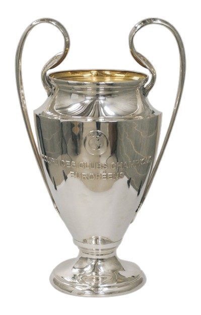

Um pouco sobre as principais Competições do Futebol mundial
O futebol é um esporte que cativa milhões de pessoas ao redor do mundo, e suas competições são o ápice desse fascínio. Entre as principais competições, destacam-se a Copa do Mundo FIFA, que é realizada a cada quatro anos e reúne as melhores seleções nacionais do mundo em uma emocionante disputa pelo título de campeão mundial.
Outra competição de destaque é a Liga dos Campeões da UEFA, que reúne os melhores clubes da Europa em uma batalha pela supremacia no continente. Com jogos emocionantes e times repletos de estrelas, a Liga dos Campeões é uma das competições mais assistidas e prestigiadas do mundo.
Além dessas, há também competições nacionais que despertam grande interesse, como o Campeonato Brasileiro, a Premier League Inglesa, a La Liga Espanhola e a Serie A Italiana, entre outras. Esses campeonatos são conhecidos pela intensidade e qualidade do futebol apresentado, atraindo fãs de todas as partes do mundo.
Essas competições não apenas celebram o talento dos jogadores, mas também promovem a união entre povos e culturas diferentes, tornando o futebol um esporte verdadeiramente global.
